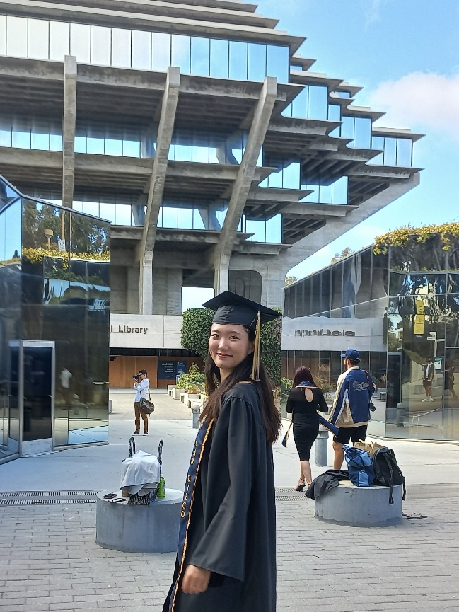
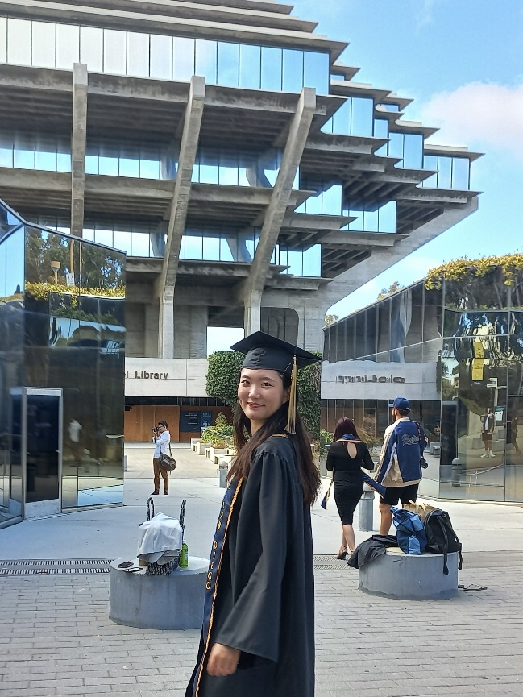

This is Jisu Kim!
Welcome to my personal webpage.
I major in Cognitive Science - Machine Learning and Neural Computation, minor in Mathematics at University of California, San Diego.
This is my last quarter at UCSD as an undergraduate student!

🛠 Tech Stack 🛠
Techs that I have used at least once


Welcome to my personal webpage.
I major in Cognitive Science - Machine Learning and Neural Computation, minor in Mathematics at University of California, San Diego.
This is my last quarter at UCSD as an undergraduate student!

🛠 Tech Stack 🛠
Techs that I have used at least once
🦈
🇰🇷안녕하세요!🇰🇷 ⇨ 🇺🇸HELLOW!🇺🇸
I born in South Korea, near the city of Seoul.
I will introduce my short story in Korean high school.
Back in time, I made the early decision to major in STEM in ninth grade, but I did not make a boundary between myself and study and experience. I formed a ‘Women in STEM’ club and organized various activities as a vice president and explored diverse scientific experiences while I was in high school. When I was a freshman, I and our club members held a presentation in front of the club manager to show how the club activities will be beneficial educationally. We successfully persuaded our school to support us - this was the first time our school had ever provided financial support for an extracurricular activity of a club. With one presentation, our club was able to conduct scientific research activities using a $3,000 grant per semester. The scientific activities were visiting an observatory and inviting a pharmacology professor to open a class for dreaming students, etc. Apart from this, I have a year-long history of participating in the Crystallization-Contest which was hosted by Seoul National University where is considered the best university in South Korea. Previously, I was limited to do experiments in a laboratory since our school limited on experiments three times a year for each science classes. However by taking advantage of the contest, I could experiment two hours a day every Tuesday and Thursday with an instructor. As a result of my hard work, I got the prize along with a $400 reward from the contest. Although the experiment was about chemistry, and all the activities I did in the club were quite far from my current major, I just hoped to be a practical person based on these experiences, so that I could develop a desire and motivation for study all my life. And I am sure all the activities I have participated in have contributed greatly to my direction of study. With these experiences, I have developed interests in STEM fields(, correlating to computer science). The times were all worthy and valuable seeds to major in STEM.
I born in South Korea, near the city of Seoul.
I will introduce my short story in Korean high school.
Back in time, I made the early decision to major in STEM in ninth grade, but I did not make a boundary between myself and study and experience. I formed a ‘Women in STEM’ club and organized various activities as a vice president and explored diverse scientific experiences while I was in high school. When I was a freshman, I and our club members held a presentation in front of the club manager to show how the club activities will be beneficial educationally. We successfully persuaded our school to support us - this was the first time our school had ever provided financial support for an extracurricular activity of a club. With one presentation, our club was able to conduct scientific research activities using a $3,000 grant per semester. The scientific activities were visiting an observatory and inviting a pharmacology professor to open a class for dreaming students, etc. Apart from this, I have a year-long history of participating in the Crystallization-Contest which was hosted by Seoul National University where is considered the best university in South Korea. Previously, I was limited to do experiments in a laboratory since our school limited on experiments three times a year for each science classes. However by taking advantage of the contest, I could experiment two hours a day every Tuesday and Thursday with an instructor. As a result of my hard work, I got the prize along with a $400 reward from the contest. Although the experiment was about chemistry, and all the activities I did in the club were quite far from my current major, I just hoped to be a practical person based on these experiences, so that I could develop a desire and motivation for study all my life. And I am sure all the activities I have participated in have contributed greatly to my direction of study. With these experiences, I have developed interests in STEM fields(, correlating to computer science). The times were all worthy and valuable seeds to major in STEM.